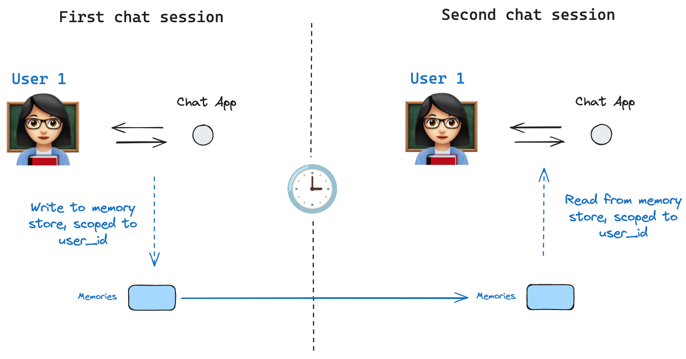

持久化¶
LangGraph 有一个内置的持久化层，通过检查点器实现。当你使用检查点器编译图时，检查点器会在每个超级步骤保存图状态的 checkpoint。这些检查点保存到 thread 中，可以在图执行后访问。因为 threads 允许在执行后访问图的状态，所以人机协作、记忆、时间旅行和容错等多种强大功能都成为可能。请参阅此操作指南，了解如何在图中添加和使用检查点器的端到端示例。下面，我们将更详细地讨论这些概念。

LangGraph API 自动处理检查点
使用 LangGraph API 时，你无需手动实现或配置检查点器。API 在幕后为你处理所有持久化基础设施。
线程¶
线程是分配给检查点器保存的每个检查点的唯一 ID 或 线程标识符。当使用检查点器调用图时，你必须在配置的 configurable 部分中指定 thread_id
检查点¶
检查点是每个超级步骤保存的图状态的快照，由具有以下关键属性的 StateSnapshot 对象表示
config：与此检查点关联的配置。metadata：与此检查点关联的元数据。values：此时状态通道的值。next：要在图中接下来执行的节点名称的元组。tasks：包含要执行的后续任务信息的PregelTask对象元组。如果该步骤之前曾尝试过，它将包含错误信息。如果图在节点内部被动态中断，tasks将包含与中断相关的附加数据。
让我们看看以如下方式调用简单图时保存的检查点
API 参考：StateGraph | START | END | InMemorySaver
from langgraph.graph import StateGraph, START, END
from langgraph.checkpoint.memory import InMemorySaver
from typing import Annotated
from typing_extensions import TypedDict
from operator import add
class State(TypedDict):
foo: str
bar: Annotated[list[str], add]
def node_a(state: State):
return {"foo": "a", "bar": ["a"]}
def node_b(state: State):
return {"foo": "b", "bar": ["b"]}
workflow = StateGraph(State)
workflow.add_node(node_a)
workflow.add_node(node_b)
workflow.add_edge(START, "node_a")
workflow.add_edge("node_a", "node_b")
workflow.add_edge("node_b", END)
checkpointer = InMemorySaver()
graph = workflow.compile(checkpointer=checkpointer)
config = {"configurable": {"thread_id": "1"}}
graph.invoke({"foo": ""}, config)
运行图后，我们预期会看到恰好 4 个检查点
- 空检查点，其中
START是下一个要执行的节点 - 包含用户输入
{'foo': '', 'bar': []}的检查点，node_a是下一个要执行的节点 - 包含
node_a输出{'foo': 'a', 'bar': ['a']}的检查点，node_b是下一个要执行的节点 - 包含
node_b输出{'foo': 'b', 'bar': ['a', 'b']}的检查点，并且没有要执行的下一个节点
请注意，bar 通道的值包含来自两个节点的输出，因为我们为 bar 通道设置了 reducer。
获取状态¶
当与保存的图状态交互时，你必须指定一个线程标识符。你可以通过调用 graph.get_state(config) 来查看图的*最新*状态。这将返回一个 StateSnapshot 对象，该对象对应于配置中提供的线程 ID 关联的最新检查点，或者如果提供了检查点 ID，则返回与该线程的检查点 ID 关联的检查点。
# get the latest state snapshot
config = {"configurable": {"thread_id": "1"}}
graph.get_state(config)
# get a state snapshot for a specific checkpoint_id
config = {"configurable": {"thread_id": "1", "checkpoint_id": "1ef663ba-28fe-6528-8002-5a559208592c"}}
graph.get_state(config)
在我们的示例中，get_state 的输出将如下所示
StateSnapshot(
values={'foo': 'b', 'bar': ['a', 'b']},
next=(),
config={'configurable': {'thread_id': '1', 'checkpoint_ns': '', 'checkpoint_id': '1ef663ba-28fe-6528-8002-5a559208592c'}},
metadata={'source': 'loop', 'writes': {'node_b': {'foo': 'b', 'bar': ['b']}}, 'step': 2},
created_at='2024-08-29T19:19:38.821749+00:00',
parent_config={'configurable': {'thread_id': '1', 'checkpoint_ns': '', 'checkpoint_id': '1ef663ba-28f9-6ec4-8001-31981c2c39f8'}}, tasks=()
)
获取状态历史¶
你可以通过调用 graph.get_state_history(config) 获取给定线程的图执行的完整历史记录。这将返回一个与配置中提供的线程 ID 关联的 StateSnapshot 对象列表。重要的是，检查点将按时间顺序排列，最近的检查点 / StateSnapshot 位于列表的首位。
在我们的示例中，get_state_history 的输出将如下所示
[
StateSnapshot(
values={'foo': 'b', 'bar': ['a', 'b']},
next=(),
config={'configurable': {'thread_id': '1', 'checkpoint_ns': '', 'checkpoint_id': '1ef663ba-28fe-6528-8002-5a559208592c'}},
metadata={'source': 'loop', 'writes': {'node_b': {'foo': 'b', 'bar': ['b']}}, 'step': 2},
created_at='2024-08-29T19:19:38.821749+00:00',
parent_config={'configurable': {'thread_id': '1', 'checkpoint_ns': '', 'checkpoint_id': '1ef663ba-28f9-6ec4-8001-31981c2c39f8'}},
tasks=(),
),
StateSnapshot(
values={'foo': 'a', 'bar': ['a']}, next=('node_b',),
config={'configurable': {'thread_id': '1', 'checkpoint_ns': '', 'checkpoint_id': '1ef663ba-28f9-6ec4-8001-31981c2c39f8'}},
metadata={'source': 'loop', 'writes': {'node_a': {'foo': 'a', 'bar': ['a']}}, 'step': 1},
created_at='2024-08-29T19:19:38.819946+00:00',
parent_config={'configurable': {'thread_id': '1', 'checkpoint_ns': '', 'checkpoint_id': '1ef663ba-28f4-6b4a-8000-ca575a13d36a'}},
tasks=(PregelTask(id='6fb7314f-f114-5413-a1f3-d37dfe98ff44', name='node_b', error=None, interrupts=()),),
),
StateSnapshot(
values={'foo': '', 'bar': []},
next=('node_a',),
config={'configurable': {'thread_id': '1', 'checkpoint_ns': '', 'checkpoint_id': '1ef663ba-28f4-6b4a-8000-ca575a13d36a'}},
metadata={'source': 'loop', 'writes': None, 'step': 0},
created_at='2024-08-29T19:19:38.817813+00:00',
parent_config={'configurable': {'thread_id': '1', 'checkpoint_ns': '', 'checkpoint_id': '1ef663ba-28f0-6c66-bfff-6723431e8481'}},
tasks=(PregelTask(id='f1b14528-5ee5-579c-949b-23ef9bfbed58', name='node_a', error=None, interrupts=()),),
),
StateSnapshot(
values={'bar': []},
next=('__start__',),
config={'configurable': {'thread_id': '1', 'checkpoint_ns': '', 'checkpoint_id': '1ef663ba-28f0-6c66-bfff-6723431e8481'}},
metadata={'source': 'input', 'writes': {'foo': ''}, 'step': -1},
created_at='2024-08-29T19:19:38.816205+00:00',
parent_config=None,
tasks=(PregelTask(id='6d27aa2e-d72b-5504-a36f-8620e54a76dd', name='__start__', error=None, interrupts=()),),
)
]

回放¶
也可以回放之前的图执行。如果我们使用 thread_id 和 checkpoint_id 调用图，那么我们将*回放* checkpoint_id 对应的检查点*之前*已执行的步骤，并且只执行检查点*之后*的步骤。
thread_id是线程的 ID。checkpoint_id是指线程中特定检查点的标识符。
在调用图时，你必须将这些作为配置的 configurable 部分传入
config = {"configurable": {"thread_id": "1", "checkpoint_id": "0c62ca34-ac19-445d-bbb0-5b4984975b2a"}}
graph.invoke(None, config=config)
重要的是，LangGraph 知道特定步骤是否以前执行过。如果执行过，LangGraph 只会简单地在图中*回放*该特定步骤，而不会重新执行该步骤，但这仅适用于所提供的 checkpoint_id *之前*的步骤。checkpoint_id *之后*的所有步骤都将被执行（即，一个新的分支），即使它们以前执行过。请参阅此时间旅行操作指南，了解有关回放的更多信息。

更新状态¶
除了从特定的 checkpoints 回放图之外，我们还可以*编辑*图的状态。我们使用 graph.update_state() 来实现。此方法接受三个不同的参数
config¶
配置应包含 thread_id，指定要更新哪个线程。当只传递 thread_id 时，我们更新（或分叉）当前状态。可选地，如果我们包含 checkpoint_id 字段，那么我们分叉该选定的检查点。
values¶
这些是将用于更新状态的值。请注意，此更新的处理方式与来自节点的任何更新完全相同。这意味着如果为图状态中的某些通道定义了 reducer 函数，这些值将传递给reducer函数。这意味着 update_state 不会自动覆盖每个通道的通道值，而只覆盖没有 reducer 的通道。让我们通过一个例子来了解。
假设你已经使用以下模式定义了图的状态（参见上面的完整示例）
from typing import Annotated
from typing_extensions import TypedDict
from operator import add
class State(TypedDict):
foo: int
bar: Annotated[list[str], add]
现在假设图的当前状态是
如果你如下更新状态
那么图的新状态将是
foo 键（通道）完全改变了（因为没有为该通道指定 reducer，所以 update_state 会覆盖它）。然而，为 bar 键指定了一个 reducer，因此它将 "b" 附加到 bar 的状态。
as_node¶
调用 update_state 时，你可以选择指定的最后一项是 as_node。如果你提供了它，更新将像来自节点 as_node 一样应用。如果未提供 as_node，则在不模糊的情况下，它将被设置为最后更新状态的节点。这之所以重要，是因为接下来要执行的步骤取决于最后给出更新的节点，因此这可用于控制哪个节点接下来执行。请参阅此时间旅行操作指南，了解有关分叉状态的更多信息。

记忆存储¶

状态模式指定了一组在图执行时填充的键。如上所述，状态可以通过检查点器在每个图步骤写入线程，从而实现状态持久化。
但是，如果我们要*跨线程*保留一些信息怎么办？考虑一个聊天机器人的情况，我们希望在与该用户进行的所有聊天对话（例如，线程）中保留有关该用户的特定信息！
仅凭检查点器，我们无法跨线程共享信息。这促使了对Store接口的需求。为了说明这一点，我们可以定义一个 InMemoryStore 来存储用户在所有线程中的信息。我们只需像以前一样，使用检查点器和我们新的 in_memory_store 变量来编译我们的图。
LangGraph API 自动处理存储
使用 LangGraph API 时，你无需手动实现或配置存储。API 在幕后为你处理所有存储基础设施。
基本用法¶
首先，让我们在不使用 LangGraph 的情况下单独展示这一点。
记忆通过 tuple 进行命名空间管理，在此特定示例中为 (<user_id>, "memories")。命名空间可以是任意长度，并表示任何内容，不必是用户特定的。
我们使用 store.put 方法将记忆保存到存储中的命名空间。当我们这样做时，我们指定命名空间（如上定义），以及记忆的键值对：键是记忆的唯一标识符（memory_id），值（一个字典）是记忆本身。
memory_id = str(uuid.uuid4())
memory = {"food_preference" : "I like pizza"}
in_memory_store.put(namespace_for_memory, memory_id, memory)
我们可以使用 store.search 方法读取命名空间中的记忆，该方法将以列表形式返回给定用户的所有记忆。最近的记忆在列表的末尾。
memories = in_memory_store.search(namespace_for_memory)
memories[-1].dict()
{'value': {'food_preference': 'I like pizza'},
'key': '07e0caf4-1631-47b7-b15f-65515d4c1843',
'namespace': ['1', 'memories'],
'created_at': '2024-10-02T17:22:31.590602+00:00',
'updated_at': '2024-10-02T17:22:31.590605+00:00'}
每种记忆类型都是一个 Python 类 (Item)，具有特定属性。我们可以像上面那样通过 .dict 转换来将其作为字典访问。它具有的属性是
value：此记忆的值（本身是一个字典）key：此记忆在此命名空间中的唯一键namespace：一个字符串列表，此记忆类型的命名空间created_at：此记忆创建时的时间戳updated_at：此记忆更新时的时间戳
语义搜索¶
除了简单检索，该存储还支持语义搜索，允许你根据含义而非精确匹配来查找记忆。要启用此功能，请使用嵌入模型配置存储
API 参考：init_embeddings
from langchain.embeddings import init_embeddings
store = InMemoryStore(
index={
"embed": init_embeddings("openai:text-embedding-3-small"), # Embedding provider
"dims": 1536, # Embedding dimensions
"fields": ["food_preference", "$"] # Fields to embed
}
)
现在搜索时，你可以使用自然语言查询来查找相关的记忆
# Find memories about food preferences
# (This can be done after putting memories into the store)
memories = store.search(
namespace_for_memory,
query="What does the user like to eat?",
limit=3 # Return top 3 matches
)
你可以通过配置 fields 参数或在存储记忆时指定 index 参数来控制记忆的哪些部分被嵌入。
# Store with specific fields to embed
store.put(
namespace_for_memory,
str(uuid.uuid4()),
{
"food_preference": "I love Italian cuisine",
"context": "Discussing dinner plans"
},
index=["food_preference"] # Only embed "food_preferences" field
)
# Store without embedding (still retrievable, but not searchable)
store.put(
namespace_for_memory,
str(uuid.uuid4()),
{"system_info": "Last updated: 2024-01-01"},
index=False
)
在 LangGraph 中使用¶
有了这些，我们就可以在 LangGraph 中使用 in_memory_store。in_memory_store 与检查点器协同工作：检查点器如上所述将状态保存到线程，而 in_memory_store 允许我们存储任意信息以供*跨*线程访问。我们如下编译图，同时使用检查点器和 in_memory_store。
API 参考：InMemorySaver
from langgraph.checkpoint.memory import InMemorySaver
# We need this because we want to enable threads (conversations)
checkpointer = InMemorySaver()
# ... Define the graph ...
# Compile the graph with the checkpointer and store
graph = graph.compile(checkpointer=checkpointer, store=in_memory_store)
我们像以前一样，使用 thread_id 调用图，并使用 user_id，我们将用它来将我们的记忆命名空间到这个特定的用户，如我们上面所示。
# Invoke the graph
user_id = "1"
config = {"configurable": {"thread_id": "1", "user_id": user_id}}
# First let's just say hi to the AI
for update in graph.stream(
{"messages": [{"role": "user", "content": "hi"}]}, config, stream_mode="updates"
):
print(update)
我们可以通过将 store: BaseStore 和 config: RunnableConfig 作为节点参数传入，在*任何节点*中访问 in_memory_store 和 user_id。以下是如何在节点中使用语义搜索来查找相关记忆的示例
def update_memory(state: MessagesState, config: RunnableConfig, *, store: BaseStore):
# Get the user id from the config
user_id = config["configurable"]["user_id"]
# Namespace the memory
namespace = (user_id, "memories")
# ... Analyze conversation and create a new memory
# Create a new memory ID
memory_id = str(uuid.uuid4())
# We create a new memory
store.put(namespace, memory_id, {"memory": memory})
如上所示，我们还可以在任何节点中访问存储，并使用 store.search 方法获取记忆。请记住，记忆会作为可转换为字典的对象列表返回。
memories[-1].dict()
{'value': {'food_preference': 'I like pizza'},
'key': '07e0caf4-1631-47b7-b15f-65515d4c1843',
'namespace': ['1', 'memories'],
'created_at': '2024-10-02T17:22:31.590602+00:00',
'updated_at': '2024-10-02T17:22:31.590605+00:00'}
我们可以访问这些记忆并在我们的模型调用中使用它们。
def call_model(state: MessagesState, config: RunnableConfig, *, store: BaseStore):
# Get the user id from the config
user_id = config["configurable"]["user_id"]
# Namespace the memory
namespace = (user_id, "memories")
# Search based on the most recent message
memories = store.search(
namespace,
query=state["messages"][-1].content,
limit=3
)
info = "\n".join([d.value["memory"] for d in memories])
# ... Use memories in the model call
如果我们创建一个新线程，只要 user_id 相同，我们仍然可以访问相同的记忆。
# Invoke the graph
config = {"configurable": {"thread_id": "2", "user_id": "1"}}
# Let's say hi again
for update in graph.stream(
{"messages": [{"role": "user", "content": "hi, tell me about my memories"}]}, config, stream_mode="updates"
):
print(update)
当我们使用 LangGraph 平台时，无论是在本地（例如，在 LangGraph Studio 中）还是使用 LangGraph 平台，基本存储都默认可用，无需在图编译期间指定。然而，要启用语义搜索，你确实需要在 langgraph.json 文件中配置索引设置。例如
{
...
"store": {
"index": {
"embed": "openai:text-embeddings-3-small",
"dims": 1536,
"fields": ["$"]
}
}
}
有关更多详细信息和配置选项，请参阅部署指南。
检查点库¶
在底层，检查点功能由符合BaseCheckpointSaver 接口的检查点对象提供支持。LangGraph 提供了多种检查点实现，所有这些都通过独立的、可安装的库实现
langgraph-checkpoint：检查点保存器 (BaseCheckpointSaver) 和序列化/反序列化接口 (SerializerProtocol) 的基础接口。包括用于实验的内存中检查点实现 (InMemorySaver)。LangGraph 包含langgraph-checkpoint。langgraph-checkpoint-sqlite：使用 SQLite 数据库 (SqliteSaver / AsyncSqliteSaver) 的 LangGraph 检查点实现。非常适合实验和本地工作流。需要单独安装。langgraph-checkpoint-postgres：一种使用 Postgres 数据库 (PostgresSaver / AsyncPostgresSaver) 的高级检查点器，在 LangGraph 平台中使用。非常适合在生产环境中使用。需要单独安装。
检查点接口¶
每个检查点器都符合BaseCheckpointSaver 接口，并实现了以下方法
.put- 存储带配置和元数据的检查点。.put_writes- 存储与检查点关联的中间写入（即待处理写入）。.get_tuple- 使用给定配置（thread_id和checkpoint_id）获取检查点元组。这用于在graph.get_state()中填充StateSnapshot。.list- 列出与给定配置和过滤条件匹配的检查点。这用于在graph.get_state_history()中填充状态历史。
如果检查点器用于异步图执行（即通过 .ainvoke、.astream、.abatch 执行图），则将使用上述方法的异步版本（.aput、.aput_writes、.aget_tuple、.alist）。
注意
对于异步运行你的图，你可以使用 InMemorySaver，或者 Sqlite/Postgres 检查点器的异步版本 -- AsyncSqliteSaver / AsyncPostgresSaver 检查点器。
序列化器¶
当检查点器保存图状态时，它们需要序列化状态中的通道值。这通过序列化器对象完成。langgraph_checkpoint 定义了用于实现序列化器的协议，并提供了一个默认实现 (JsonPlusSerializer)，该实现处理各种类型，包括 LangChain 和 LangGraph 基本类型、日期时间、枚举等。
加密¶
检查点器可以选择加密所有持久化状态。要启用此功能，请将 EncryptedSerializer 实例传递给任何 BaseCheckpointSaver 实现的 serde 参数。创建加密序列化器的最简单方法是通过 from_pycryptodome_aes，它从 LANGGRAPH_AES_KEY 环境变量中读取 AES 密钥（或接受 key 参数）。
API 参考：SqliteSaver
import sqlite3
from langgraph.checkpoint.serde.encrypted import EncryptedSerializer
from langgraph.checkpoint.sqlite import SqliteSaver
serde = EncryptedSerializer.from_pycryptodome_aes() # reads LANGGRAPH_AES_KEY
checkpointer = SqliteSaver(sqlite3.connect("checkpoint.db"), serde=serde)
API 参考：PostgresSaver
from langgraph.checkpoint.serde.encrypted import EncryptedSerializer
from langgraph.checkpoint.postgres import PostgresSaver
serde = EncryptedSerializer.from_pycryptodome_aes()
checkpointer = PostgresSaver.from_conn_string("postgresql://...", serde=serde)
checkpointer.setup()
在 LangGraph 平台上运行时，只要存在 LANGGRAPH_AES_KEY，加密就会自动启用，因此你只需提供环境变量。其他加密方案可以通过实现 CipherProtocol 并将其提供给 EncryptedSerializer 来使用。
功能¶
人机协作¶
首先，检查点器通过允许人类检查、中断和批准图步骤来促进人机协作工作流。这些工作流需要检查点器，因为人类必须能够随时查看图的状态，并且图必须能够在人类对状态进行任何更新后恢复执行。有关具体示例，请参阅这些操作指南。
记忆¶
其次，检查点器允许在交互之间拥有“记忆”。在重复的人机交互（如对话）中，任何后续消息都可以发送到该线程，该线程将保留其对先前消息的记忆。请参阅此操作指南，了解如何使用检查点器添加和管理对话记忆的端到端示例。
时间旅行¶
第三，检查点器允许“时间旅行”，允许用户回放之前的图执行以审查和/或调试特定的图步骤。此外，检查点器使得在任意检查点分叉图状态以探索替代轨迹成为可能。
容错性¶
最后，检查点还提供容错和错误恢复：如果在给定超级步骤中一个或多个节点失败，你可以从最后一个成功的步骤重新启动图。此外，当图节点在给定超级步骤中执行中途失败时，LangGraph 会存储在该超级步骤中成功完成的任何其他节点的待处理检查点写入，这样无论何时我们从该超级步骤恢复图执行时，我们都不会重新运行那些成功的节点。
待处理写入¶
此外，当图节点在给定超级步骤中执行中途失败时，LangGraph 会存储在该超级步骤中成功完成的任何其他节点的待处理检查点写入，这样无论何时我们从该超级步骤恢复图执行时，我们都不会重新运行那些成功的节点。